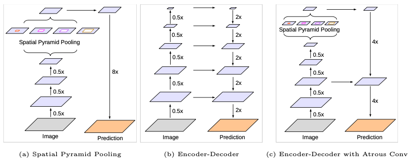
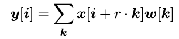
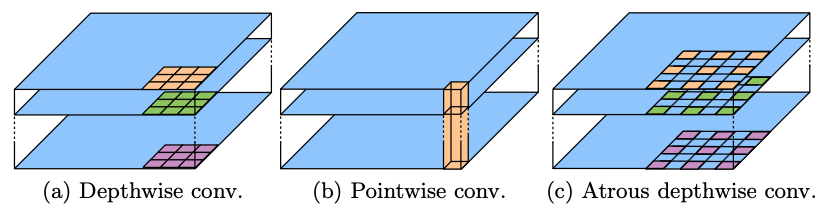
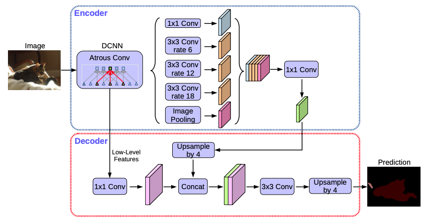
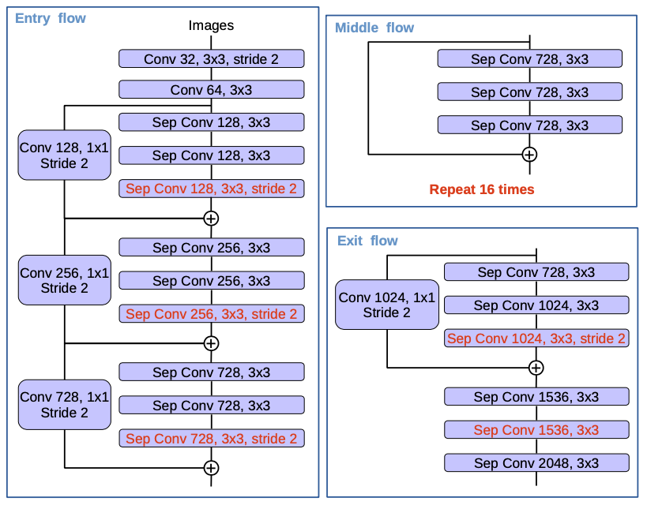

Encoder-Decoder with Atrous Separable Convolution for Semantic Image Segmentation
Abstract
- DeepLabv3+はシンプルながら効率的なデコーダーをDeepLabv3に追加し、オブジェクトの輪郭部の結果を改善した
- Xceptionを追求し、depth-wiseかつseparableな畳み込みをAtrous Spatial Pyramid Poolingとデコーダーに適用し、より高速でロバストなencoder-decoderネットワークを開発した
Introduction
前提・課題
- DeepLabv3では並列したいくつかのparallel atrous convolutionを異なるrateで適用していた（Atrous Spatial Pyramid Pooling：ASPP）
- 対して、PSPNetは異なるグリッドスケールでのpooling操作を行っている（Spatial Pyramid Pooling）
- いくらセマンティック情報が最終層の特徴マップにエンコードされたとしても、backboneでstrideを設定したpoolingやconvolution操作をすることにより細部、特に輪郭部の情報は失われる
- この問題はAtrous convolutionでより密な特徴マップを抽出することで多少改善されるが、計算コストから出力されるマップは入力画像の4-8倍程度小さい解像度となる
- 一方、encoder-decoderモデルはencoderパスにおける高速な計算と、decoderパスに置いて詳細な物体領域の段階的な復元を可能にする
- 上記の手法を複合することどちらの利点も活かすことを試みた
- DeepLabv3+はDeepLabv3に物体領域を詳細に復元するための効率的なdecoderを追加した
- Depthwise separable convolutionとXceptionを採用した
- Atrous separable convolutionをASPPとdecoderモジュールの両方に適用した

Fig. 1
3. Methods
3.1 Encoder-Decoder with Atrous Convolution
Atrous convolution:
- 特徴マップの解像度と視野の広さを調整するために重要なテクニック
- 二次元データの入力の場合は以下のように数式化される

Depthwise separable convolution:

DeepLabv3 as encoder:
- DeepLabv3は異なるrateでAtrous convolutionをかけることによりASPPモジュールを拡張している
- DeepLabv3+ではオリジナルのDeepLabv3にてlogitsをする前の最後の特長マップをencoderのアウトプットとした
- 計算資源によってはatrous convolutionを適用することにより任意の解像度の特徴マップを出力できる
Proposed decoder:
- DeepLabv3のEncoderの特徴マップは通常 output stride = 16に設定される
- DeepLabv3+では、Encoderの特徴はまずBilinearに4倍になるようアップサンプリングされ、backboneから出力される同一の空間解像度を持つlow-level の特徴マップに結合される（例えば、ResNet-101のstride前のConv2）
- low-levelの特徴マップのチャンネル数を落とすため、1x1convolutionを行う
- 結合後はいくつか3x3convolutionを行い特徴マップを補正し、その後bilinearに4倍のアップサンプリングをかける
- 本論文ではoutput stride = 16が精度と速度のバランスが最も良かった

Fig. 2
3.2 Modified Aligned Xception
- MSRAのXception改良版をベースにして以下の3つの変更を加えた
- 1. Deeper Xception（速度とメモリの効率を考えてentry flowの改良は採用していない
- 2. Atrous separable convolutionを適用し任意の解像度の特徴マップを得るため、Max poolingをdepthwise separable convolution with stridingに置き換えた
- 3. Batch NormalizationとReLUをそれぞれの3x3 depthwise convolutionのあとに追加した

Fig. 4 Modified Alighned Xception
4. Experimental Evaluation
- 初期学習率は0.007、poly policyにてscheduling
- crop sizeは513
- output stride = 16のときにbatch normalizationのパラメータをfine-tuning？
- 学習時に入力データをrandom scaling
- 本モデルはend-to-endで学習した
4.1 Decoder Design Choices
- いろいろパラメータを変えて精度の良かったDecoderを追求している